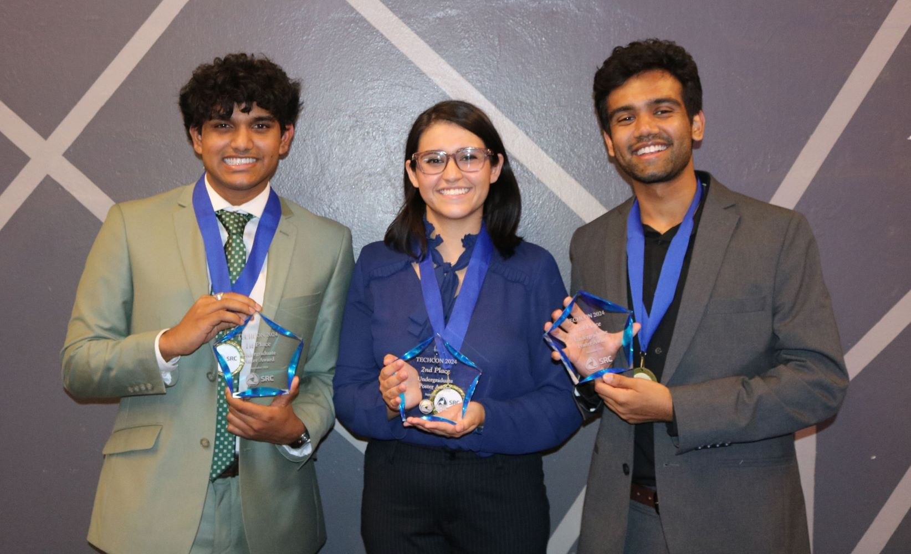
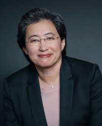
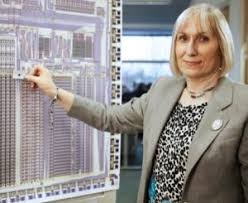

TechCon began as a small, specialized gathering focused on advancing semiconductor research and academic
collaboration. Its earliest editions, held in the late 1980s and early 1990s, brought together
university researchers and industry engineers who recognized the need for a unified platform to share
breakthroughs in microelectronics. Although modest in scale, these early events laid a strong foundation
for what would later become one of the most influential conferences in semiconductor innovation.

Mission of TechCon
The mission of TechCon is to advance global innovation in semiconductor research by fostering
collaboration between academia, industry, and emerging talent. The conference is driven by a commitment
to scientific excellence, technological progress, and open knowledge exchange. TechCon aims to empower
researchers, students, and engineers by providing a platform where groundbreaking ideas can be shared,
refined, and transformed into real-world solutions.
At the core of the conference are principles of innovation, collaboration, diversity, and industry
readiness. Through technical sessions, networking opportunities, and career development programs,
TechCon seeks to accelerate technological advancements while preparing the next generation of
semiconductor leaders.
Past Speakers Of TechCon 2024
Deirdre Hanford — CEO, Natcast
Deirdre Hanford is a pioneering leader in semiconductor manufacturing and advanced chip ecosystems. As
CEO
of Natcast, she has played a major role in strengthening the U.S. semiconductor supply chain. Her work
emphasizes research-driven innovation and large-scale collaboration between academia, industry, and
government. At TechCon, she spoke on the future of R&D and its critical role in sustaining global
semiconductor progress.
Dr. Lisa Su — CEO, AMD

Dr. Lisa Su is renowned for leading AMD’s transformation into a global leader in high-performance
computing.
Her contributions include groundbreaking work in CPU and GPU architectures. At TechCon, she shared
insights
on multi-chip design, energy-efficient architectures, and the future of AI-accelerated computing.
Dr. Sophie Wilson — ARM Architecture Pioneer

Dr. Sophie Wilson co-designed the original ARM architecture, which powers billions of devices worldwide.
Her
work has transformed mobile computing and energy-efficient chip design. At TechCon, she spoke about the
evolution of processor instruction sets and the future of low-power architectures.